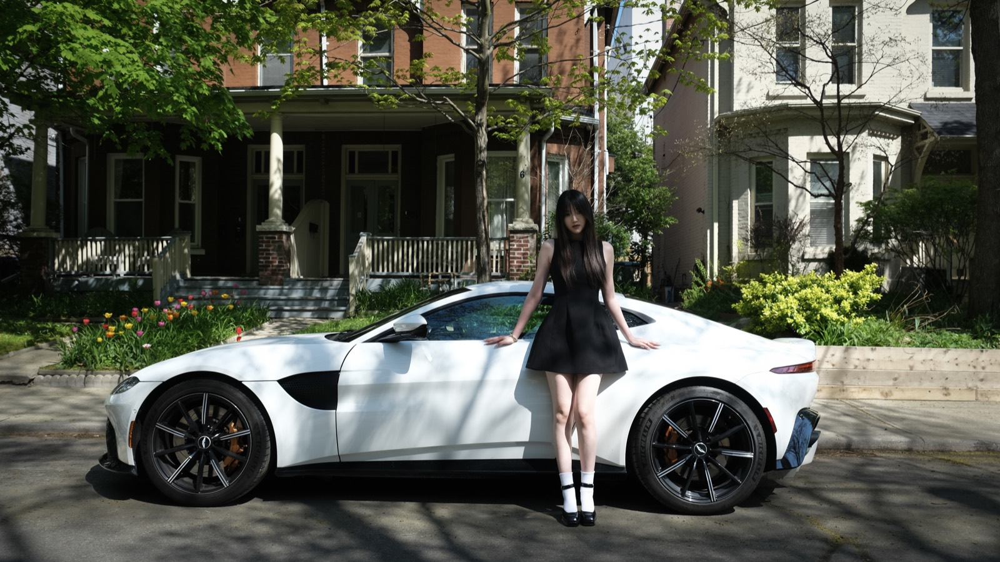
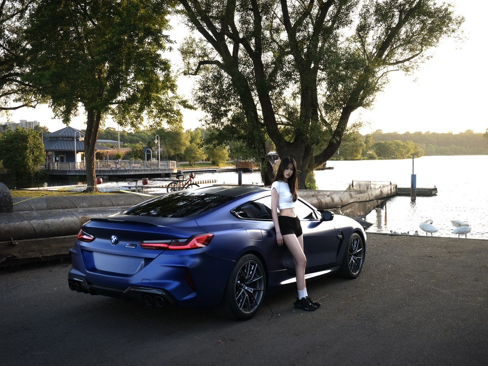
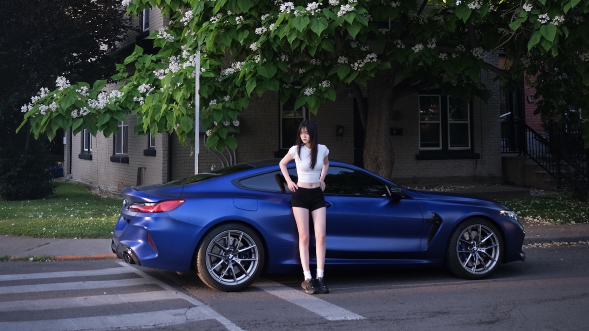

Blossom and Silver
Soft blossoms and a silver Porsche create a quiet spring portrait.
Details
The wide composition uses the flowering branches as a natural frame while the car anchors the lower half of the scene.
Toronto · Automotive portraiture · 2025
Automotive stories shaped by architecture, natural light and the people who give each frame its pulse.
Selected work
A study of colour, place and the visual character of performance cars.
Soft blossoms and a silver Porsche create a quiet spring portrait.
The wide composition uses the flowering branches as a natural frame while the car anchors the lower half of the scene.
A white grand tourer meets the texture and symmetry of old stone.
Strong midday light defines the car's profile, while the pointed doorway gives the portrait a formal architectural backdrop.
Deep summer greens contrast with the Audi's sharp grey bodywork.
The tree canopy fills the upper frame and creates a calm natural setting around the car and portrait subject.

Tree shadows move across a white sports car and a row of city homes.
The layered houses, leaves and reflections turn an everyday street into a detailed editorial setting.

Blue bodywork and warm evening light meet beside still water.
The illuminated lake opens the background, while the car's rear lights and saturated paint hold attention in the foreground.

White flowers soften the bold blue shape of the parked coupe.
The hanging blossoms form a bright ceiling over the darker scene, balancing the subject and car below.